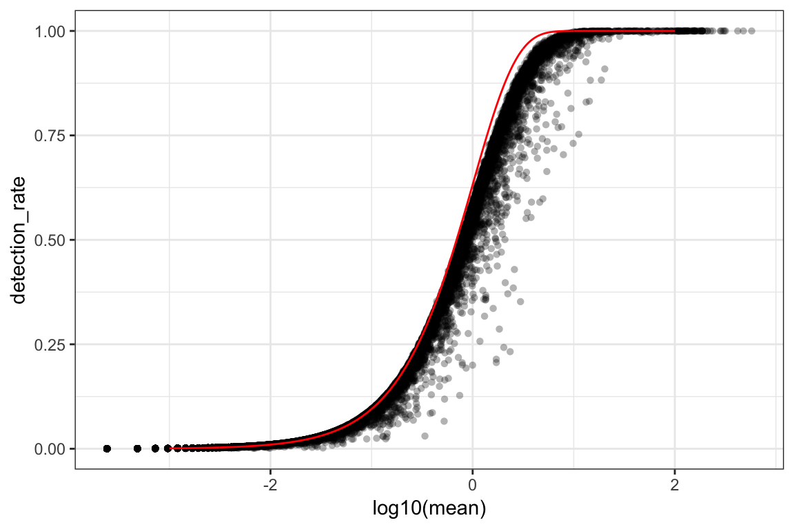
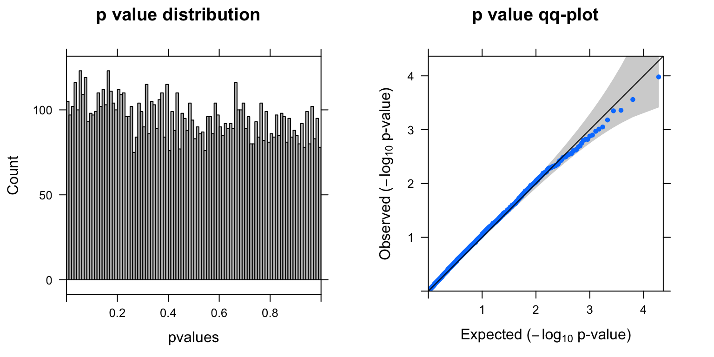
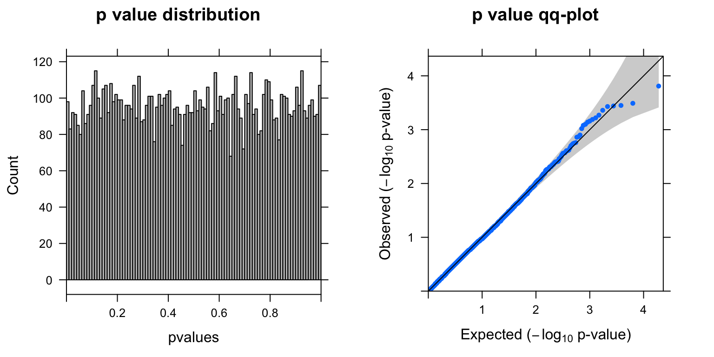
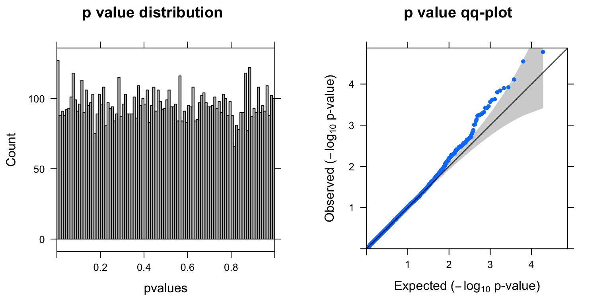
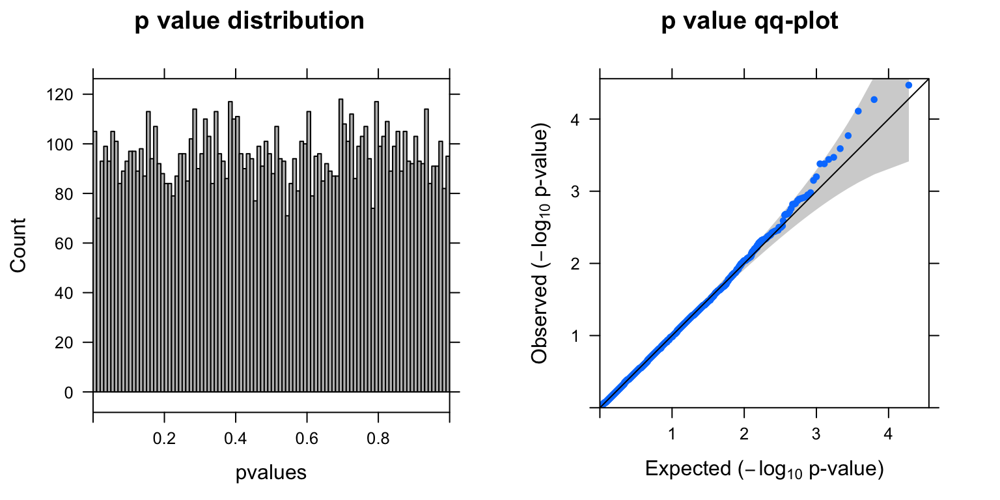
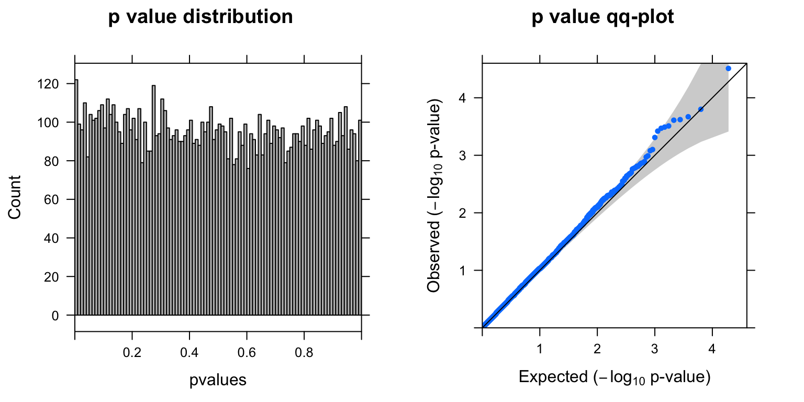

DE analysis on sctransformed CROP-seq data
Yifan Zhou
5/21/2019
Load data and functions
library(Matrix)
library(sctransform)
library(ggplot2)
wd <- '~/Downloads/ASoC/singlecell/github/'
set.seed(1000)
## Necessary data
load(paste0(wd,'data/cropseq_expression.Rd'))
vst_out <- readRDS(paste0(wd,'data/sctransformed_object.rds'))
# Got 'vst_out' from:
# sctransform::vst(gene.exp,n_genes = NULL,return_gene_attr = TRUE, return_cell_attr = TRUE)
## Necessary functions
source(paste0(wd,'code/qq-plot.R'))
summ_pvalues <- function(pvalues){
library(gridExtra)
# p values distribution histogram
plot1 <- histogram(pvalues,col='grey',type="count",xlim=c(0,1),breaks=100, main= "p value distribution")
# pvalues qq-plot
plot2 <- qqunif.plot(pvalues, main="p value qq-plot")
grid.arrange(plot1,plot2, ncol=2)
}
ttest <- function(subset,tg.cells,neg.cells){
pval <- rep(NA,nrow(subset))
for (i in 1:nrow(subset)){
pval[i] = t.test(subset[i,neg.cells],
subset[i,tg.cells])$p.value
}
pval <- data.frame(gene=row.names(subset),pval=pval)
pval$adj <- p.adjust(pval$pval,method = 'fdr')
cat(sum(pval$adj<0.1),'genes passed FDR=0.1 cutoff')
print(knitr::kable(head(pval[order(pval$pval),],10)))
summ_pvalues(pval$pval)
return(pval)
}sctransform on single-cell UMI data
Before sctransform
- Gene expression mean ~ variance relationship
orig_attr <- data.frame(mean = rowMeans(gene.exp),
detection_rate = rowMeans(gene.exp > 0),
var = apply(gene.exp, 1, var))
ggplot(orig_attr, aes(log10(mean), log10(var))) +
geom_point(alpha=0.3, shape=16) + geom_density_2d(size = 0.3) +
geom_abline(intercept = 0, slope = 1, color='red') + theme_bw()
For the genes, we can see that up to a mean UMI count of ~1, the mean-variance follows the 1:1 line, i.e. variance and mean are roughly equal (as expected under a Poisson model). However, genes with a higher average UMI count show overdispersion compared to Poisson.
- Mean ~ detection-rate relationship
# add the expected detection rate under Poisson model
x = seq(from = -3, to = 2, length.out = 1000)
poisson_model <- data.frame(log_mean = x, detection_rate = 1 - dpois(0, lambda = 10^x))
ggplot(orig_attr, aes(log10(mean), detection_rate)) + geom_point(alpha=0.3, shape=16) +
geom_line(data=poisson_model, aes(x=log_mean, y=detection_rate), color='red') +
theme_bw()
We see a lower than expected detection rate in the medium expression range. However, for the highly expressed genes, the rate is very close to 1.0, suggesting that there is no zero-inflation in the counts for those genes and that zero-inflation is a result of overdispersion, rather than an independent systematic bias.
After sctransform
sctransform models the expression of each gene as a negative binomial random variable with a mean that depends on other variables, such as the sequencing depth for each cell.
Each observed UMI count is transformed into a Pearson residual which can be interpreted as the number of standard deviations an observed count was away from the expected mean. If the model accurately describes the mean-variance relationship and the dependency of mean and latent factors, then the result should have mean zero and a stable variance across the range of expression.
The vst function was used to estimate model parameters and performs the variance stabilizing transformation. Here we use the default – log10 of the total UMI counts of a cell – as the latent variable for sequencing depth for each cell.
vst_out <- sctransform::vst(as.matrix(gene.exp),n_genes = NULL,return_gene_attr = TRUE, return_cell_attr = TRUE)sctransform_data <- vst_out$y
cat('Output dimension (Gene x Cell):',dim(sctransform_data))Output dimension (Gene x Cell): 17281 4144- The model parameters as a function of gene mean (geometric mean)
plot_model_pars(vst_out)
Internally vst performs Poisson regression per gene with \(log(\mu)=\beta_0+\beta_1 x\), where \(x\) is log10(umi), and \(\mu\) is the expected number of UMI counts of the given gene. The above plot shows (Intercept): \(\beta_0\) , log_umi: \(\beta_1\) , and theta: the maximum likelihood estimate of the overdispersion parameter \(\theta\) under the negative binomial model, (where the variance of a gene depends on the expected UMI counts and theta: \(\mu+\frac{\mu^2}{\theta}\).) In the second step, the regularized model parameters are used to turn observed UMI counts into Pearson residuals.
- Overall properties of the transformed data
ggplot(vst_out$gene_attr, aes(residual_mean)) + geom_histogram(binwidth=0.01) + theme_bw()
ggplot(vst_out$gene_attr, aes(residual_variance)) + geom_histogram(binwidth=0.1) +
geom_vline(xintercept=1, color='red') + xlim(0, 10) + theme_bw()
After transformation, the mean of the gene residuals is close to zero, and most genes have a variance around one. This suggests that overall the regularized negative binomial model is a suitable model that describes the effect of sequencing depth on UMI counts. Further, after transformation there is no relationship between gene mean and variance, as the next plot shows:
ggplot(vst_out$gene_attr, aes(log10(gmean), log10(residual_variance))) + geom_point(alpha=0.3, shape=16) +
geom_density_2d(size = 0.3) + theme_bw()
DE analysis using independent t-test
gRNA target: BCL11B locus
sctransform_data <- vst_out$y
glocus <- "BCL11B" # UBE2Q2P1(30): 22; pos(29): 7; PBRM1(20): 130; NGEF(13): 384; KCTD13: 1; BCL11B(59): 11.
# cat('gRNA target:',glocus)
nlocus <- colSums(exp.per.enhancer>0)
tg.cells <- colnames(exp.per.enhancer)[exp.per.enhancer[glocus,]>0 & nlocus==1]
neg.cells <- colnames(exp.per.enhancer)[exp.per.enhancer["neg",]>0 & nlocus==1]
cat('# of targeted cells with only 1 gRNA:',length(tg.cells),'\n')# of targeted cells with only 1 gRNA: 59 cat('# of neg control cells:',length(neg.cells))# of neg control cells: 111count.gene.exp = cbind(gene.exp[ ,tg.cells],gene.exp[ ,neg.cells])
gene.exp.percent <- rowMeans(count.gene.exp>0)Filtering criterion: genes in > 10% cells
subset.genes <- names(gene.exp.percent)[gene.exp.percent>0.1]
cat('Number of genes that passed the filtering criterion:',length(subset.genes))Number of genes that passed the filtering criterion: 9554subset.sctransform_data <- sctransform_data[subset.genes,]
BCL11B.pval <- ttest(subset.sctransform_data,tg.cells,neg.cells)11 genes passed FDR=0.1 cutoff<table>
<thead>
<tr>
<th style="text-align:left;"> </th>
<th style="text-align:left;"> gene </th>
<th style="text-align:right;"> pval </th>
<th style="text-align:right;"> adj </th>
</tr>
</thead>
<tbody>
<tr>
<td style="text-align:left;"> 4337 </td>
<td style="text-align:left;"> NINJ1 </td>
<td style="text-align:right;"> 9.70e-06 </td>
<td style="text-align:right;"> 0.0495481 </td>
</tr>
<tr>
<td style="text-align:left;"> 4727 </td>
<td style="text-align:left;"> DNAJC9 </td>
<td style="text-align:right;"> 1.47e-05 </td>
<td style="text-align:right;"> 0.0495481 </td>
</tr>
<tr>
<td style="text-align:left;"> 3195 </td>
<td style="text-align:left;"> SLC35A1 </td>
<td style="text-align:right;"> 1.56e-05 </td>
<td style="text-align:right;"> 0.0495481 </td>
</tr>
<tr>
<td style="text-align:left;"> 6963 </td>
<td style="text-align:left;"> CCP110 </td>
<td style="text-align:right;"> 4.35e-05 </td>
<td style="text-align:right;"> 0.0718785 </td>
</tr>
<tr>
<td style="text-align:left;"> 5310 </td>
<td style="text-align:left;"> ARRB1 </td>
<td style="text-align:right;"> 4.85e-05 </td>
<td style="text-align:right;"> 0.0718785 </td>
</tr>
<tr>
<td style="text-align:left;"> 1291 </td>
<td style="text-align:left;"> NPHP1 </td>
<td style="text-align:right;"> 5.03e-05 </td>
<td style="text-align:right;"> 0.0718785 </td>
</tr>
<tr>
<td style="text-align:left;"> 7864 </td>
<td style="text-align:left;"> IMPA2 </td>
<td style="text-align:right;"> 5.27e-05 </td>
<td style="text-align:right;"> 0.0718785 </td>
</tr>
<tr>
<td style="text-align:left;"> 5186 </td>
<td style="text-align:left;"> PLCB3 </td>
<td style="text-align:right;"> 7.68e-05 </td>
<td style="text-align:right;"> 0.0851119 </td>
</tr>
<tr>
<td style="text-align:left;"> 7519 </td>
<td style="text-align:left;"> CDC6 </td>
<td style="text-align:right;"> 8.11e-05 </td>
<td style="text-align:right;"> 0.0851119 </td>
</tr>
<tr>
<td style="text-align:left;"> 1405 </td>
<td style="text-align:left;"> CDCA7 </td>
<td style="text-align:right;"> 8.91e-05 </td>
<td style="text-align:right;"> 0.0851119 </td>
</tr>
</tbody>
</table>
Permutation test
combined <- c(tg.cells,neg.cells)
permuted.pval <- list()
Nperm <- 5
for (i in 1:Nperm){
cat('----------------------','\n')
cat('Permutation test',i,':','\n')
permuted <- combined[sample(length(combined))]
permuted.tg <- permuted[1:length(tg.cells)]
permuted.neg <- permuted[(length(tg.cells)+1):length(combined)]
permuted.pval[[i]] <- ttest(subset.sctransform_data,permuted.tg,permuted.neg)
}----------------------
Permutation test 1 :
0 genes passed FDR=0.1 cutoff<table>
<thead>
<tr>
<th style="text-align:left;"> </th>
<th style="text-align:left;"> gene </th>
<th style="text-align:right;"> pval </th>
<th style="text-align:right;"> adj </th>
</tr>
</thead>
<tbody>
<tr>
<td style="text-align:left;"> 4610 </td>
<td style="text-align:left;"> FAM188A </td>
<td style="text-align:right;"> 0.0001049 </td>
<td style="text-align:right;"> 0.8681331 </td>
</tr>
<tr>
<td style="text-align:left;"> 2481 </td>
<td style="text-align:left;"> FAM173B </td>
<td style="text-align:right;"> 0.0002749 </td>
<td style="text-align:right;"> 0.8681331 </td>
</tr>
<tr>
<td style="text-align:left;"> 6469 </td>
<td style="text-align:left;"> CINP </td>
<td style="text-align:right;"> 0.0004332 </td>
<td style="text-align:right;"> 0.8681331 </td>
</tr>
<tr>
<td style="text-align:left;"> 306 </td>
<td style="text-align:left;"> IPO13 </td>
<td style="text-align:right;"> 0.0004442 </td>
<td style="text-align:right;"> 0.8681331 </td>
</tr>
<tr>
<td style="text-align:left;"> 942 </td>
<td style="text-align:left;"> HNRNPU </td>
<td style="text-align:right;"> 0.0006609 </td>
<td style="text-align:right;"> 0.8681331 </td>
</tr>
<tr>
<td style="text-align:left;"> 7617 </td>
<td style="text-align:left;"> SLC35B1 </td>
<td style="text-align:right;"> 0.0008881 </td>
<td style="text-align:right;"> 0.8681331 </td>
</tr>
<tr>
<td style="text-align:left;"> 8548 </td>
<td style="text-align:left;"> TFPT </td>
<td style="text-align:right;"> 0.0009813 </td>
<td style="text-align:right;"> 0.8681331 </td>
</tr>
<tr>
<td style="text-align:left;"> 2585 </td>
<td style="text-align:left;"> TNPO1 </td>
<td style="text-align:right;"> 0.0010807 </td>
<td style="text-align:right;"> 0.8681331 </td>
</tr>
<tr>
<td style="text-align:left;"> 7916 </td>
<td style="text-align:left;"> RNF165 </td>
<td style="text-align:right;"> 0.0012603 </td>
<td style="text-align:right;"> 0.8681331 </td>
</tr>
<tr>
<td style="text-align:left;"> 4227 </td>
<td style="text-align:left;"> IFT74 </td>
<td style="text-align:right;"> 0.0013261 </td>
<td style="text-align:right;"> 0.8681331 </td>
</tr>
</tbody>
</table>
----------------------
Permutation test 2 :
0 genes passed FDR=0.1 cutoff<table>
<thead>
<tr>
<th style="text-align:left;"> </th>
<th style="text-align:left;"> gene </th>
<th style="text-align:right;"> pval </th>
<th style="text-align:right;"> adj </th>
</tr>
</thead>
<tbody>
<tr>
<td style="text-align:left;"> 8835 </td>
<td style="text-align:left;"> BCAS4 </td>
<td style="text-align:right;"> 0.0001540 </td>
<td style="text-align:right;"> 0.6161039 </td>
</tr>
<tr>
<td style="text-align:left;"> 9040 </td>
<td style="text-align:left;"> LRRC75B </td>
<td style="text-align:right;"> 0.0003248 </td>
<td style="text-align:right;"> 0.6161039 </td>
</tr>
<tr>
<td style="text-align:left;"> 1501 </td>
<td style="text-align:left;"> PECR </td>
<td style="text-align:right;"> 0.0003538 </td>
<td style="text-align:right;"> 0.6161039 </td>
</tr>
<tr>
<td style="text-align:left;"> 390 </td>
<td style="text-align:left;"> JAK1 </td>
<td style="text-align:right;"> 0.0003653 </td>
<td style="text-align:right;"> 0.6161039 </td>
</tr>
<tr>
<td style="text-align:left;"> 4141 </td>
<td style="text-align:left;"> KHDRBS3 </td>
<td style="text-align:right;"> 0.0003686 </td>
<td style="text-align:right;"> 0.6161039 </td>
</tr>
<tr>
<td style="text-align:left;"> 7537 </td>
<td style="text-align:left;"> STAT5B </td>
<td style="text-align:right;"> 0.0004394 </td>
<td style="text-align:right;"> 0.6161039 </td>
</tr>
<tr>
<td style="text-align:left;"> 1519 </td>
<td style="text-align:left;"> FAM134A </td>
<td style="text-align:right;"> 0.0005432 </td>
<td style="text-align:right;"> 0.6161039 </td>
</tr>
<tr>
<td style="text-align:left;"> 6077 </td>
<td style="text-align:left;"> EBPL </td>
<td style="text-align:right;"> 0.0006057 </td>
<td style="text-align:right;"> 0.6161039 </td>
</tr>
<tr>
<td style="text-align:left;"> 8535 </td>
<td style="text-align:left;"> ZNF616 </td>
<td style="text-align:right;"> 0.0006421 </td>
<td style="text-align:right;"> 0.6161039 </td>
</tr>
<tr>
<td style="text-align:left;"> 6052 </td>
<td style="text-align:left;"> MTRF1 </td>
<td style="text-align:right;"> 0.0006911 </td>
<td style="text-align:right;"> 0.6161039 </td>
</tr>
</tbody>
</table>
----------------------
Permutation test 3 :
0 genes passed FDR=0.1 cutoff<table>
<thead>
<tr>
<th style="text-align:left;"> </th>
<th style="text-align:left;"> gene </th>
<th style="text-align:right;"> pval </th>
<th style="text-align:right;"> adj </th>
</tr>
</thead>
<tbody>
<tr>
<td style="text-align:left;"> 8392 </td>
<td style="text-align:left;"> EGLN2 </td>
<td style="text-align:right;"> 0.0000166 </td>
<td style="text-align:right;"> 0.1359947 </td>
</tr>
<tr>
<td style="text-align:left;"> 4643 </td>
<td style="text-align:left;"> ARHGAP12 </td>
<td style="text-align:right;"> 0.0000285 </td>
<td style="text-align:right;"> 0.1359947 </td>
</tr>
<tr>
<td style="text-align:left;"> 1270 </td>
<td style="text-align:left;"> PDCL3 </td>
<td style="text-align:right;"> 0.0000782 </td>
<td style="text-align:right;"> 0.2170350 </td>
</tr>
<tr>
<td style="text-align:left;"> 7985 </td>
<td style="text-align:left;"> CNN2 </td>
<td style="text-align:right;"> 0.0001201 </td>
<td style="text-align:right;"> 0.2170350 </td>
</tr>
<tr>
<td style="text-align:left;"> 2796 </td>
<td style="text-align:left;"> SPARC </td>
<td style="text-align:right;"> 0.0001253 </td>
<td style="text-align:right;"> 0.2170350 </td>
</tr>
<tr>
<td style="text-align:left;"> 4539 </td>
<td style="text-align:left;"> NOTCH1 </td>
<td style="text-align:right;"> 0.0001448 </td>
<td style="text-align:right;"> 0.2170350 </td>
</tr>
<tr>
<td style="text-align:left;"> 1532 </td>
<td style="text-align:left;"> CCDC140 </td>
<td style="text-align:right;"> 0.0001590 </td>
<td style="text-align:right;"> 0.2170350 </td>
</tr>
<tr>
<td style="text-align:left;"> 2843 </td>
<td style="text-align:left;"> THOC3 </td>
<td style="text-align:right;"> 0.0002362 </td>
<td style="text-align:right;"> 0.2549233 </td>
</tr>
<tr>
<td style="text-align:left;"> 6504 </td>
<td style="text-align:left;"> RP11-701H24.2 </td>
<td style="text-align:right;"> 0.0002401 </td>
<td style="text-align:right;"> 0.2549233 </td>
</tr>
<tr>
<td style="text-align:left;"> 3212 </td>
<td style="text-align:left;"> UFL1 </td>
<td style="text-align:right;"> 0.0002712 </td>
<td style="text-align:right;"> 0.2590778 </td>
</tr>
</tbody>
</table>
----------------------
Permutation test 4 :
0 genes passed FDR=0.1 cutoff<table>
<thead>
<tr>
<th style="text-align:left;"> </th>
<th style="text-align:left;"> gene </th>
<th style="text-align:right;"> pval </th>
<th style="text-align:right;"> adj </th>
</tr>
</thead>
<tbody>
<tr>
<td style="text-align:left;"> 8785 </td>
<td style="text-align:left;"> CHD6 </td>
<td style="text-align:right;"> 0.0000339 </td>
<td style="text-align:right;"> 0.2482061 </td>
</tr>
<tr>
<td style="text-align:left;"> 6422 </td>
<td style="text-align:left;"> TTC7B </td>
<td style="text-align:right;"> 0.0000541 </td>
<td style="text-align:right;"> 0.2482061 </td>
</tr>
<tr>
<td style="text-align:left;"> 4329 </td>
<td style="text-align:left;"> AUH </td>
<td style="text-align:right;"> 0.0000779 </td>
<td style="text-align:right;"> 0.2482061 </td>
</tr>
<tr>
<td style="text-align:left;"> 411 </td>
<td style="text-align:left;"> RABGGTB </td>
<td style="text-align:right;"> 0.0001706 </td>
<td style="text-align:right;"> 0.4074877 </td>
</tr>
<tr>
<td style="text-align:left;"> 6414 </td>
<td style="text-align:left;"> ZC3H14 </td>
<td style="text-align:right;"> 0.0002565 </td>
<td style="text-align:right;"> 0.4461644 </td>
</tr>
<tr>
<td style="text-align:left;"> 6010 </td>
<td style="text-align:left;"> MTMR6 </td>
<td style="text-align:right;"> 0.0003420 </td>
<td style="text-align:right;"> 0.4461644 </td>
</tr>
<tr>
<td style="text-align:left;"> 110 </td>
<td style="text-align:left;"> NECAP2 </td>
<td style="text-align:right;"> 0.0003596 </td>
<td style="text-align:right;"> 0.4461644 </td>
</tr>
<tr>
<td style="text-align:left;"> 3406 </td>
<td style="text-align:left;"> AP5Z1 </td>
<td style="text-align:right;"> 0.0004136 </td>
<td style="text-align:right;"> 0.4461644 </td>
</tr>
<tr>
<td style="text-align:left;"> 3705 </td>
<td style="text-align:left;"> RINT1 </td>
<td style="text-align:right;"> 0.0004203 </td>
<td style="text-align:right;"> 0.4461644 </td>
</tr>
<tr>
<td style="text-align:left;"> 6470 </td>
<td style="text-align:left;"> TECPR2 </td>
<td style="text-align:right;"> 0.0006313 </td>
<td style="text-align:right;"> 0.6031777 </td>
</tr>
</tbody>
</table>
----------------------
Permutation test 5 :
0 genes passed FDR=0.1 cutoff<table>
<thead>
<tr>
<th style="text-align:left;"> </th>
<th style="text-align:left;"> gene </th>
<th style="text-align:right;"> pval </th>
<th style="text-align:right;"> adj </th>
</tr>
</thead>
<tbody>
<tr>
<td style="text-align:left;"> 1324 </td>
<td style="text-align:left;"> CYP27C1 </td>
<td style="text-align:right;"> 0.0000306 </td>
<td style="text-align:right;"> 0.2920069 </td>
</tr>
<tr>
<td style="text-align:left;"> 7207 </td>
<td style="text-align:left;"> CENPN </td>
<td style="text-align:right;"> 0.0001573 </td>
<td style="text-align:right;"> 0.4013724 </td>
</tr>
<tr>
<td style="text-align:left;"> 9140 </td>
<td style="text-align:left;"> ST13 </td>
<td style="text-align:right;"> 0.0002144 </td>
<td style="text-align:right;"> 0.4013724 </td>
</tr>
<tr>
<td style="text-align:left;"> 5122 </td>
<td style="text-align:left;"> PATL1 </td>
<td style="text-align:right;"> 0.0002396 </td>
<td style="text-align:right;"> 0.4013724 </td>
</tr>
<tr>
<td style="text-align:left;"> 9490 </td>
<td style="text-align:left;"> CXorf40A </td>
<td style="text-align:right;"> 0.0002473 </td>
<td style="text-align:right;"> 0.4013724 </td>
</tr>
<tr>
<td style="text-align:left;"> 9290 </td>
<td style="text-align:left;"> PORCN </td>
<td style="text-align:right;"> 0.0003064 </td>
<td style="text-align:right;"> 0.4013724 </td>
</tr>
<tr>
<td style="text-align:left;"> 3717 </td>
<td style="text-align:left;"> CBLL1 </td>
<td style="text-align:right;"> 0.0003262 </td>
<td style="text-align:right;"> 0.4013724 </td>
</tr>
<tr>
<td style="text-align:left;"> 9348 </td>
<td style="text-align:left;"> GDPD2 </td>
<td style="text-align:right;"> 0.0003367 </td>
<td style="text-align:right;"> 0.4013724 </td>
</tr>
<tr>
<td style="text-align:left;"> 4190 </td>
<td style="text-align:left;"> WASHC1 </td>
<td style="text-align:right;"> 0.0003781 </td>
<td style="text-align:right;"> 0.4013724 </td>
</tr>
<tr>
<td style="text-align:left;"> 2875 </td>
<td style="text-align:left;"> CLK4 </td>
<td style="text-align:right;"> 0.0004911 </td>
<td style="text-align:right;"> 0.4692376 </td>
</tr>
</tbody>
</table>
Top DE genes detected
plot_gene <- function(glocus,testgene,tg.cells,neg.cells,expression,residual){
paired.df <- data.frame(row.names = c(tg.cells,neg.cells),
expression = expression,
residual = residual,
condition=c(rep(glocus,length(tg.cells)),
rep('neg',length(neg.cells))))
paired.df$condition <- relevel(as.factor(paired.df$condition),glocus)
plot1 <- ggplot(data = paired.df, aes(expression,fill=condition)) +
geom_histogram(position = "dodge",bins = 20) + theme_bw() +
labs(title=paste('test gene:',testgene), x = 'UMI count') +
theme(plot.title = element_text(size=14),
axis.text=element_text(size=12), axis.title=element_text(size=14),
legend.position = 'none')
plot2 <- ggplot(data = paired.df, aes(residual,fill=condition)) +
geom_histogram(position = "dodge",bins = 20) + theme_bw() +
labs(title=paste0('(',glocus,' locus)'), x = 'Pearson residual') +
theme(plot.title = element_text(size=14),
axis.text=element_text(size=12), axis.title=element_text(size=14),
legend.title = element_text(size=12),
legend.text = element_text(size=11),
legend.position = c(0.8,0.85))
grid.arrange(plot1,plot2, ncol=2)
}
for (testgene in BCL11B.pval$gene[order(BCL11B.pval$pval)][1:6]){
test.expression = as.numeric(count.gene.exp[testgene,])
test.residual = as.numeric(sctransform_data[testgene, c(tg.cells,neg.cells)])
plot_gene(glocus,testgene,tg.cells,neg.cells,test.expression,test.residual)
}


Comparison with using MASTcpm
library(edgeR)
library(MAST)
DE_process <- function(gcount, ncount, filtcpm=10, filtpercent=0.2, perm=F){
# perm true of false, if true will perform a permuted version.
coldata <- data.frame(row.names = c(colnames(gcount),colnames(ncount)),
condition=c(rep('G',dim(gcount)[2]),rep('N',dim(ncount)[2])))
countall <- cbind(gcount,ncount)
if (perm==T){
coldata$condition <- permute(coldata$condition)
}
y <- DGEList(counts= countall,group=coldata$condition)
keep <- rowSums(edgeR::cpm(y)[,y$samples$group=="N"]>filtcpm) >= dim(ncount)[2] * filtpercent
y <- y[keep, keep.lib.sizes=FALSE]
return(y)
}
run_MASTcpmDetRate <- function(y) {
countfl <- y$counts
grp <-y$samples[,"group"]
names(grp) <- rownames(y$samples)
cdr <- scale(colSums(countfl > 0)/dim(countfl)[1])
dge <- DGEList(counts = countfl)
dge <- edgeR::calcNormFactors(dge)
cpms <- edgeR::cpm(dge)
sca <- FromMatrix(exprsArray = log2(cpms + 1),
cData = data.frame(wellKey = names(grp),
grp = grp, cdr = cdr))
zlmdata <- zlm.SingleCellAssay(~cdr + grp, sca)
mast <- lrTest(zlmdata, "grp")
# hist(mast[, "hurdle", "Pr(>Chisq)"], 50)
df = data.frame(pval = mast[, "hurdle", "Pr(>Chisq)"],
row.names = names(mast[, "hurdle", "Pr(>Chisq)"]))
df$fdr <- p.adjust(df$pval, method="BH")
b <- getLogFC(zlmdata)
df <- cbind(df, b[b$contrast=="grpN",c("logFC", "varLogFC","z"), with=F])
df <- df[order(df$pval),]
return(df)
}
count.ls = list(tg.count = gene.exp[ ,tg.cells],
neg.count = gene.exp[ ,neg.cells])
y <- DE_process(count.ls$tg.count, count.ls$neg.count,
filtcpm=0, filtpercent=0.1, perm=F)
res <- run_MASTcpmDetRate(y)
cat(dim(res[res$fdr < 0.1,])[1],"genes passed FDR=0.1 cutoff")0 genes passed FDR=0.1 cutoffprint(knitr::kable(signif(as.matrix(head(res)),digit=2)))<table>
<thead>
<tr>
<th style="text-align:left;"> </th>
<th style="text-align:right;"> pval </th>
<th style="text-align:right;"> fdr </th>
<th style="text-align:right;"> logFC </th>
<th style="text-align:right;"> varLogFC </th>
<th style="text-align:right;"> z </th>
</tr>
</thead>
<tbody>
<tr>
<td style="text-align:left;"> DNAJC9 </td>
<td style="text-align:right;"> 2.9e-05 </td>
<td style="text-align:right;"> 0.28 </td>
<td style="text-align:right;"> 1.8 </td>
<td style="text-align:right;"> 0.19 </td>
<td style="text-align:right;"> 4.1 </td>
</tr>
<tr>
<td style="text-align:left;"> ARRB1 </td>
<td style="text-align:right;"> 1.0e-04 </td>
<td style="text-align:right;"> 0.41 </td>
<td style="text-align:right;"> NaN </td>
<td style="text-align:right;"> NaN </td>
<td style="text-align:right;"> NaN </td>
</tr>
<tr>
<td style="text-align:left;"> NINJ1 </td>
<td style="text-align:right;"> 1.4e-04 </td>
<td style="text-align:right;"> 0.41 </td>
<td style="text-align:right;"> 1.3 </td>
<td style="text-align:right;"> 0.23 </td>
<td style="text-align:right;"> 2.7 </td>
</tr>
<tr>
<td style="text-align:left;"> SLC35A1 </td>
<td style="text-align:right;"> 1.7e-04 </td>
<td style="text-align:right;"> 0.41 </td>
<td style="text-align:right;"> 1.3 </td>
<td style="text-align:right;"> 0.08 </td>
<td style="text-align:right;"> 4.7 </td>
</tr>
<tr>
<td style="text-align:left;"> SCML1 </td>
<td style="text-align:right;"> 3.0e-04 </td>
<td style="text-align:right;"> 0.56 </td>
<td style="text-align:right;"> 1.8 </td>
<td style="text-align:right;"> 0.17 </td>
<td style="text-align:right;"> 4.4 </td>
</tr>
<tr>
<td style="text-align:left;"> CDC6 </td>
<td style="text-align:right;"> 3.8e-04 </td>
<td style="text-align:right;"> 0.56 </td>
<td style="text-align:right;"> 1.9 </td>
<td style="text-align:right;"> 0.21 </td>
<td style="text-align:right;"> 4.2 </td>
</tr>
</tbody>
</table>summ_pvalues(res$pval)Session Information
sessionInfo()R version 3.5.2 (2018-12-20)
Platform: x86_64-apple-darwin15.6.0 (64-bit)
Running under: macOS Mojave 10.14
Matrix products: default
BLAS: /System/Library/Frameworks/Accelerate.framework/Versions/A/Frameworks/vecLib.framework/Versions/A/libBLAS.dylib
LAPACK: /Library/Frameworks/R.framework/Versions/3.5/Resources/lib/libRlapack.dylib
locale:
[1] en_US.UTF-8/en_US.UTF-8/en_US.UTF-8/C/en_US.UTF-8/en_US.UTF-8
attached base packages:
[1] parallel stats4 grid stats graphics grDevices utils
[8] datasets methods base
other attached packages:
[1] MAST_1.8.2 SingleCellExperiment_1.4.1
[3] SummarizedExperiment_1.12.0 DelayedArray_0.8.0
[5] BiocParallel_1.16.6 matrixStats_0.54.0
[7] Biobase_2.42.0 GenomicRanges_1.34.0
[9] GenomeInfoDb_1.18.2 IRanges_2.16.0
[11] S4Vectors_0.20.1 BiocGenerics_0.28.0
[13] edgeR_3.24.3 limma_3.38.3
[15] lattice_0.20-38 sctransform_0.2.0
[17] gridExtra_2.3 kableExtra_1.0.1
[19] knitr_1.22 ggplot2_3.1.0
[21] ashr_2.2-32 Matrix_1.2-16
loaded via a namespace (and not attached):
[1] httr_1.4.0 viridisLite_0.3.0 foreach_1.4.4
[4] assertthat_0.2.0 mixsqp_0.1-97 highr_0.7
[7] GenomeInfoDbData_1.2.0 progress_1.2.0 yaml_2.2.0
[10] globals_0.12.4 pillar_1.3.1 glue_1.3.0
[13] digest_0.6.18 XVector_0.22.0 rvest_0.3.2
[16] colorspace_1.4-0 htmltools_0.3.6 plyr_1.8.4
[19] pkgconfig_2.0.2 listenv_0.7.0 zlibbioc_1.28.0
[22] purrr_0.3.1 scales_1.0.0 webshot_0.5.1
[25] tibble_2.0.1 withr_2.1.2 lazyeval_0.2.1
[28] magrittr_1.5 crayon_1.3.4 evaluate_0.13
[31] future_1.13.0 doParallel_1.0.14 MASS_7.3-51.1
[34] xml2_1.2.0 truncnorm_1.0-8 prettyunits_1.0.2
[37] data.table_1.12.0 tools_3.5.2 hms_0.4.2
[40] stringr_1.4.0 munsell_0.5.0 locfit_1.5-9.1
[43] compiler_3.5.2 rlang_0.3.1 RCurl_1.95-4.12
[46] iterators_1.0.10 rstudioapi_0.9.0 bitops_1.0-6
[49] labeling_0.3 rmarkdown_1.11 gtable_0.2.0
[52] codetools_0.2-16 abind_1.4-5 reshape2_1.4.3
[55] R6_2.4.0 dplyr_0.8.0.1 future.apply_1.2.0
[58] readr_1.3.1 stringi_1.3.1 pscl_1.5.2
[61] SQUAREM_2017.10-1 Rcpp_1.0.0 tidyselect_0.2.5
[64] xfun_0.5